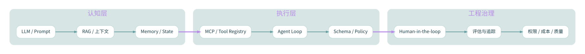

INTELLIGENCE MEETS TOOLS / KNOWLEDGE ATLAS
AI Agent · 系统工程
模型、工具、上下文、权限、记忆与工作流的职责边界
知识模块 3专题文章 4讨论时段 2026-08—10
专题全景图 / INTELLIGENCE MEETS TOOLS下载 Mermaid 源文件 ↓

查看可编辑 Mermaid 全景图源码
flowchart LR
classDef hub fill:#10374a,color:#ffffff,stroke:#4a8b9a,stroke-width:2px;
classDef node fill:#f0f7f6,color:#1b4452,stroke:#accfd0,stroke-width:1px;
subgraph G0["认知层"]
N00["LLM / Prompt"]
N01["RAG / 上下文"]
N02["Memory / State"]
end
N00 --> N01
N01 --> N02
subgraph G1["执行层"]
N10["MCP / Tool Registry"]
N11["Agent Loop"]
N12["Schema / Policy"]
end
N10 --> N11
N11 --> N12
subgraph G2["工程治理"]
N20["Human-in-the-loop"]
N21["评估与追踪"]
N22["权限 / 成本 / 质量"]
end
N20 --> N21
N21 --> N22
N02 ==> N10
N12 ==> N20
class N00 node
class N01 node
class N02 node
class N10 node
class N11 node
class N12 node
class N20 node
class N21 node
class N22 node
CURATED RESEARCH
阅读路径
按知识结构组织，不以原始聊天倒序堆积。
RAG / MCP / Agent 三层职责
RAG 是检索证据进入模型上下文的机制，MCP 是标准化连接外部资源/工具的协议，Agent 则在目标约束下组织推理、工具调用、状态更新与验证。不能把三者当作互斥替代。
历史会话整理AI 教育操作系统与多 Agent
曾讨论教育系统的九层：知识源、知识图谱、内容生成、多模态理解、片段搜索、多 Agent、学习引擎、反馈、生态。角色候选包括 Teacher、Mentor、Coach、Examiner、Socratic Tutor、Reviewer、Interviewer、Debater
历史会话整理工具调用闭环与 MCP 协议边界
从模型提出调用请求到应用侧校验、授权、执行与结果回传，理解 MCP Host、Client、Server 和协议边界。
官方规范整理Agent 安全：不可信上下文、最小权限与人工确认
识别 Prompt Injection 与过度代理权风险，建立最小权限、用户同意、人工确认和安全评估。
官方安全资料整理本专题是已恢复聊天线索与既有笔记的整理，不等于全部聊天原文逐条备份。原文可取回的部分会清楚注明。
继续校对：
Model Context Protocol ↗OpenAI API ↗